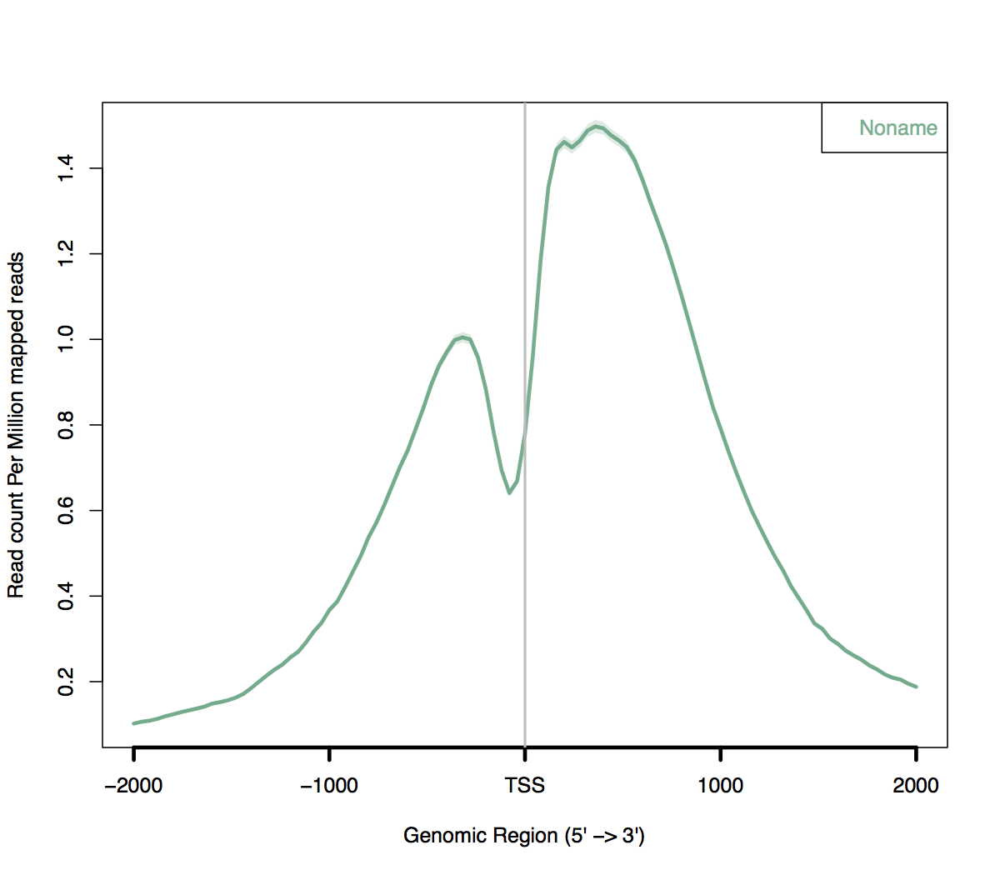

ngsplot is an easy-to-use global visualization tool for next-generation sequencing data.
When ngsplot is run without adequate memory allocation, you may get the following errors:
Error: dims [product 89082] do not match the length of object [0]
or
Error in (result.matrix + result.pseudo.rpm)/(bkg.matrix + bkg.pseudo.rpm) :
Typically ngsplot will require at least 4gb of memory.
Allocate an interactive session and run the program.
Sample session (user input in bold):
[user@biowulf]$ sinteractive --cpus-per-task=8 --mem=20g salloc.exe: Pending job allocation 46116226 salloc.exe: job 46116226 queued and waiting for resources salloc.exe: job 46116226 has been allocated resources salloc.exe: Granted job allocation 46116226 salloc.exe: Waiting for resource configuration salloc.exe: Nodes cn3144 are ready for job [user@cn3144 ~]$ module load ngsplot [user@cn3144 ~]$ cp $NGSPLOT_EXAMPLES/* . [user@cn3144 ~]$ ngs.plot.r -G hg19 -R tss -C hesc.H3k4me3.1M.bam -O k4.test -P $SLURM_CPUS_PER_TASK Loading R libraries.....Done Configuring variables...Done Analyze bam files and calculate coverage............................................................................................................................................................................................................................................Done Plotting figures...Done Saving results...Done Wrapping results up...Done All done. Cheers! [user@cn3144 ~]$ ls *.pdf hesc.H3k4me3.tss.avgprof.pdf hesc.H3k4me3.tss.heatmap.pdf [user@cn3144 ~]$ display hesc.H3k4me3.tss.avgprof.pdf [user@cn3144 ~]$ exit salloc.exe: Relinquishing job allocation 46116226 [user@biowulf ~]$
Create a batch input file (e.g. ngsplot.sh). For example:
#!/bin/bash module load ngsplot ngs.plot.r -G hg19 -R tss -C hesc.H3k4me3.1M.bam -O hesc.H3k4me3.tss -T H3K4me3 -L 3000 -FL 300 -P $SLURM_CPUS_PER_TASK
Submit this job using the Slurm sbatch command.
sbatch [--cpus-per-task=#] [--mem=#] ngsplot.sh
Create a swarmfile (e.g. ngsplot.swarm). For example:
ngs.plot.r -G hg19 -R tss -C sample1.bam -O sample1.tss -T H3K4me3_1 -L 3000 -FL 300 -P $SLURM_CPUS_PER_TASK ngs.plot.r -G hg19 -R tss -C sample2.bam -O sample2.tss -T H3K4me3_2 -L 3000 -FL 300 -P $SLURM_CPUS_PER_TASK ngs.plot.r -G hg19 -R tss -C sample3.bam -O sample3.tss -T H3K4me3_3 -L 3000 -FL 300 -P $SLURM_CPUS_PER_TASK ngs.plot.r -G hg19 -R tss -C sample4.bam -O sample4.tss -T H3K4me3_4 -L 3000 -FL 300 -P $SLURM_CPUS_PER_TASK
Submit this job using the swarm command.
swarm -f ngsplot.swarm [-g #] [-t #] --module ngsplotwhere
| -g # | Number of Gigabytes of memory required for each process (1 line in the swarm command file) |
| -t # | Number of threads/CPUs required for each process (1 line in the swarm command file). |
| --module ngsplot | Loads the ngsplot module for each subjob in the swarm |